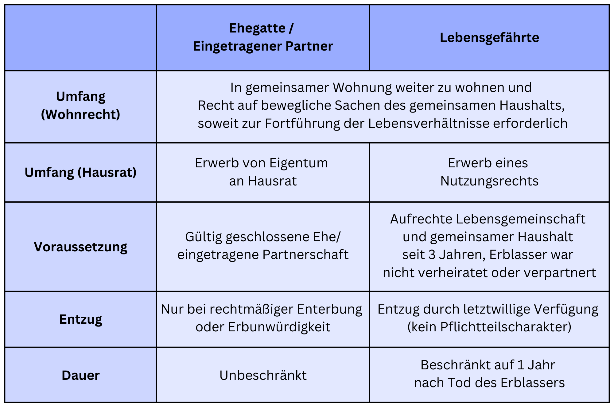

Das gesetzliche Vorausvermächtnis von Ehegatten und Lebensgefährten
Das Ableben eines Menschen bringt insbesondere für einen vormals im gemeinsamen Haushalt lebenden PartnerUnsicherheiten mit sich. Mit dem Tod des Ehegatten oder Lebensgefährten fallen sämtliche Vermögenswerte, und damit auch die zuvor gemeinsam genutzte Wohnung sowie der Hausrat, in die Verlassenschaft. Das Gesetz sieht hier ein Vorausvermächtnis vor, um dem überlebenden Ehegatten bzw. dem Lebensgefährten eine Fortführung seines Lebens unter den bisherigen Lebensumständen zu sichern.
Zweck und Natur des gesetzlichen Vorausvermächtnisses
Das gesetzliche Vorausvermächtnis soll dem Partner des Verstorbenen ermöglichen, sein bisheriges Leben fortzuführen. Er soll nach dem Ableben seines Partners sein gewohntes Leben weiterführen und in der gewohnten Umgebung bleiben dürfen.
Das Vorausvermächtnis ist ein sogenanntes "echtes Vorausvermächtnis" und steht dem Berechtigten im Zweifel neben seiner Stellung als Erbe zu. Erhält der Berechtigte aufgrund von Erbvertrag, testamentarischer Erbfolge oder gesetzlicher Erbfolge etwas aus der Verlassenschaft, so ist das gesetzliche Vorausvermächtnis davon nicht in Abzug zu bringen. Erhält der Berechtigte bloß seinen Pflichtteil, so ist das Vorausvermächtnis jedoch auf den Pflichtteil anzurechnen (§ 780 ABGB). Gegenüber Ansprüchen anderer Pflichtteilsberechtigter geht das gesetzliche Vorausvermächtnis vor und wird nicht gekürzt, wenn die Verlassenschaft nicht ausreicht, um diese Pflichtteile zu decken.
Das Vorausvermächtnis ist subsidiär, d.h. es greift dann nicht, wenn andere Bestimmungen bereits die Interessen des überlebenden Partner abdecken. War der Verstorbene bloß Mieter der Wohnung, greift nicht das Vorausvermächtnis, sondern idR das Eintrittsrecht in den Mietvertrag nach § 14 MRG. Ebenso gibt es kein Vorausvermächtnis, wenn der überlebende Partner Alleinerbe ist. Häufigster Anwendungsfall des Vorausvermächtnisses ist, wenn der Verstorbene alleinige Eigentümer oder alleiniger Wohnungseigentümer war, das Eigentum nach den Ergebnissen des Verlassenschaftsverfahren aber auf eine andere Person als den überlebenden Partner übergehen soll. Hat der Erblasser beispielsweise die Kinder als Erben eingesetzt und den Ehegatten auf den Pflichtteil, so ist die Ehewohnung trotz Eigentumserwerb der Kinder mit dem Vorausvermächtnis belastet.
Anspruchsberechtigte des Vorausvermächtnisses
Das gesetzliche Vorausvermächtnis steht grundsätzlich dem Ehegatten oder eingetragenen Partner des Verstorbenen zu und ist in diesem Fall zeitlich unbefristet (§ 745 Abs 1 ABGB).
Zudem steht auch dem Lebensgefährten des Verstorbenen das gesetzliche Vorausvermächtnis zu, wenn er zumindest 3 Jahre vor dessen Tod mit ihm im gemeinsamen Haushalt gelebt hat und der Verstorbene weder verheiratet war, noch in einer eingetragenen Partnerschaft gelebt hat. Dem Lebensgefährten steht das Vorausvermächtnis jedoch nur für ein Jahr nach dem Tod des Verstorbenen zu (§ 745 Abs 2 ABGB).
Anspruchshindernisse und Vermächtnisschuldner
Der Berechtigte hat - im Falle von Ehegatten bzw. eingetragenen Partnern - keinen Anspruch auf das gesetzliche Vorausvermächtnis, wenn er
- einen Pflichtteilsverzicht abgegeben hat, oder einen Erbverzicht, der auch einen Pflichtteilsverzicht umfasst,
- erbunwürdig ist bzw. rechtmäßig enterbt wurde, oder
- im Scheidungs- oder Auflösungsverfahren bereits eine Regelung für die Aufteilung des Gebrauchsvermögens getroffen wurde (§ 746 Abs 2 ABGB).
Bei Lebensgefährten kann das Vorausvermächtnis durch letztwillige Verfügung entzogen werden, weil es keinen Pflichtteilscharakter hat.
Der Anspruch des Berechtigten auf das Vorausvermächtnis richtet sich gegen die Verlassenschaft und nach der Einantwortung der Verlassenschaft an die Erben gegen diese.
Umfang des gesetzlichen Vorausvermächtnisses
Im Mittelpunkt des gesetzlichen Vorausvermächtnisses steht ein Wohnrecht des Berechtigten an der Wohnung, die mit dem Verstorbenen bewohnt wurde. Der Berechtigte hat dabei keinen Anspruch darauf, dass sein Wohnrecht grundbücherlich gesichert wird, sondern nur einen schuldrechtlichen Anspruch, dass ihm das Wohnrecht tatsächlich eingeräumt wird. Der Begriff der "Wohnung" ist dabei aber weit auszulegen und kann auch eine Liegenschaft mit Haus und Garten umfassen. Der Umfang des Wohnrechts des Berechtigten richtet sich nach den tatsächlichen Lebensverhältnissen zum Todeszeitpunkt. Die laufenden Kosten für den Betrieb und die Erhaltung dieser Wohnung sind vom Berechtigten zu tragen.
Neben dem Wohnrecht umfasst das gesetzliche Vorausvermächtnis aber auch die zum Haushalt gehörenden beweglichen Sachen. Dem überlebenden Partner sollen jene Dinge verbleiben, die er zur Fortführung des Haushalts nach den bisherigen Lebensumständen benötigt. Üblicherweise gehören dazu Möbel, Geschirr, technische Geräte und eventuell Fahrzeuge, nicht jedoch persönliche Gegenstände oder Bargeld des Verstorbenen. Während der Ehegatte bzw. eingetragene Partner an diesen beweglichen Sachen Eigentum erwirbt, steht dem Lebensgefährten auch hier nur ein Nutzungsrecht zu.
Der OGH hat sich zu 2 Ob 38/25i etwa mit der Frage beschäftigt, inwiefern Kunstgegenstände im gemeinsamen Haushalt dem überlebenden Partner als Teil des Vorausvermächtnisses zukommen sollen. Konkret hatte der Erblasser in diesem Fall eine Vielzahl an Gemälden und Skulpturen in der Wohnung aufgestellt, diese jedoch regelmäßig ausgetauscht und damit auch auf dem Kunstmarkt gehandelt. Das Höchstgericht kam hier zu dem Schluss, dass Gegenstände mit einer Dekorationsfunktion Teil des Vorausvermächtnisses sind, während Gegenstände, die als Wertanlage angeschafft wurden, nicht dazu gehören. Da der Erblasser die Kunstwerke vorrangig als Sammler und zur Wertanlage angeschafft hatte und die Dekorationsfunktion nur ganz untergeordnete Bedeutung hatte, waren diese Kunstwerke kein Teil des Vorausvermächtnisses.
Welche Gegenstände zum gemeinsamen Haushalt gehörten und zur Fortführung dieses Haushalts erforderlich sind, richtet sich nach deren Verwendungszweck und der konkreten Lebenssituation. Der genaue Umfang der Vorausvermächtnisses ist daher je nach Einzelfall zu bestimmen.
Vergleich zwischen Ehegatten und Lebensgefährten
Haben Sie noch Fragen zum Thema gesetzliches Vorausvermächtnis für Ehegatten und Lebensgefährten?
Eine frühzeitige Beratung schafft Klarheit und hilft, Risiken im Verlassenschaftsverfahren rechtzeitig zu vermeiden. Ich unterstütze Sie bei einer rechtssicheren Einschätzung Ihrer Situation.